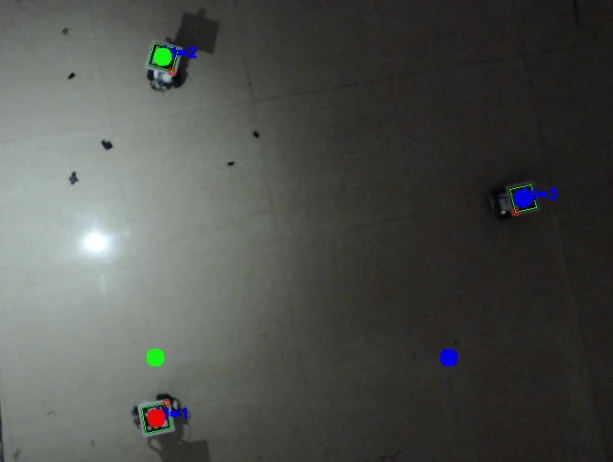
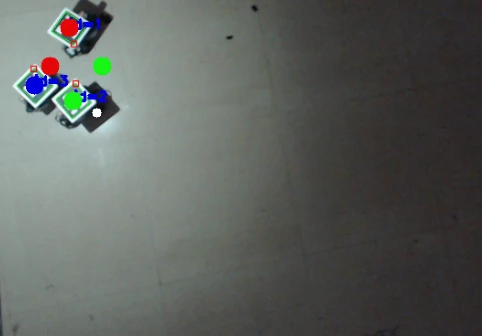

Bachelor's thesis · Multi-robot hardware
A robot swarm searching for light
Particle-swarm light-source search implemented on three LEGO NXT robots.

Overview
A physical light-source search experiment using three LEGO NXT robots and Particle Swarm Optimization. Shared light observations guide collective search, supported by camera-based localization and centralized motion commands.
Technical contributions
- Search algorithm. Developed the particle-swarm search in MATLAB and implemented the hardware workflow in Python. Each robot combines its best light observation with the best observation shared by the team.
- Localization and communication. Tracked robot positions using an overhead camera and ArUco markers. A centralized controller sends motion targets over Bluetooth, connecting optimization updates to physical robot movement.
- Navigation and sensing. Integrated light sensing, waypoint following and ultrasonic obstacle avoidance. Hardware trials evaluated whether the robots could converge toward the brightest region while operating within the experimental arena.
Results
The robots converged toward the brightest region; one documented trial took 11 iterations. The related paper received a Best Paper Award at ICECA 2019.
A closer look




Read more
Robot photographs and experimental results are from the bachelor’s thesis.